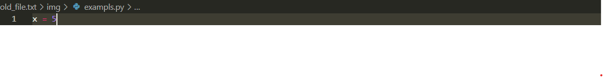
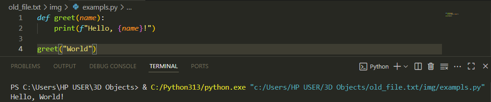

Python is a high-level, interpreted programming language known for its readability and simplicity. It is widely used in various fields such as web development, data analysis, artificial intelligence, and more.
In this beginner class, we will cover the fundamental concepts of Python programming, including data types, variables, control structures, and functions.
By the end of this class, you will have a solid understanding of Python basics and be able to write simple programs.
Let's get started!
Strings
In Python, a string is a sequence of characters enclosed in quotes. Strings can be single-quoted (' '), double-quoted (" "), or triple-quoted (''' ''' or """ """). They are used to represent text data.
Example:
greeting = "Hello, World!"
String example in Python
In this example, the variable greeting is assigned the string value "Hello, World!".
Integers
In Python, an integer (int) is a whole number without a decimal point. It can be positive, negative, or zero. Integers are used for counting and ordering.
Example:
x = 5

Integer example in Python
In this example, x is assigned the integer value of 5.
Floats
In Python, a float is a number that has a decimal point. It is used to represent real numbers and can be positive or negative.
Example:
pi = 3.14
Float example in Python
In this example, the variable pi is assigned the float value of 3.14.
Booleans
In Python, a boolean is a data type that can have one of two values: True or False. Booleans are often used in conditional statements to control the flow of a program.
Example:
is_active = True
Boolean example in Python
In this example, the variable is_active is assigned the boolean value True.
Now that you have an idea about these basic concepts, let's talk about variables.
Variables
In Python, a variable is a name that refers to a value. Variables are used to store data that can be used later in the program. You can create a variable by assigning a value to it using the equals sign (=).
Example:
age = 25
name = "Alice"
single = True
Variable examples in Python
In this example, the variable name is assigned the string value "Alice". You can use this variable later in your program to refer to the value it holds.
Variables can hold different types of data, such as strings, integers, floats, and booleans. You can also change the value of a variable at any time by reassigning it.
User Input
Variables can also be input by a user using the input function:
age = input("Enter your age: ")
In this example, the user is prompted to enter their age, and the input is stored in the variable age. The input function returns a string, so if you want to use it as an integer, you need to convert it using the int() function.
age = int(input("Enter your age: "))
In this example, the input is converted to an integer before being assigned to the variable age.
Displaying Variables
To display the value of a variable, you can use the print() function:
print(f"Your age is {age}")
If you wish to show a variable you need to use the print function and it will show in the Python terminal.
Note:
The "f" before the string in the print function creates an f-string, which allows you to embed expressions inside curly braces {} that will be replaced with their values.
Data Types
Python has several built-in data types that are used to represent different kinds of data. The most common data types are:
String: A sequence of characters enclosed in quotes.
Integer: A whole number without a decimal point.
Float: A number with a decimal point.
Boolean: A value that can be either True or False.
You can check the type of a variable using the type() function.
print(type(age)) # Output: <class 'int'>
Structured Data Types
Data types can be classified based on their structure including:
List: An ordered collection of items that can be changed. Uses square brackets []
Tuple: An ordered collection of items that cannot be changed. Uses parentheses ()
Set: An unordered collection of unique items. Uses curly braces {}
Dictionary: A collection of key-value pairs. Uses {key: value} syntax
These data types are used to store and manipulate data in Python programs. Understanding data types is essential for writing effective Python code.
Each data type has a specific set of operations you can perform, like append, del, keys, union and so on.
Examples of Data Type Operations
For example, a list can be appended to using the append() method, while a dictionary can be accessed using its keys.
my_list = [1, 2, 3]
my_list.append(4) # Adds 4 to the end of the list
my_dict = {'name': 'Alice', 'age': 25}
print(my_dict['name']) # Output: Alice
In this example, we create a list and append a new item to it, and we create a dictionary and access a value using its key.
my_set = {1, 2, 3}
my_set.add(4) # Adds 4 to the set
print(my_set) # Output: {1, 2, 3, 4}
In this example, we create a set and add a new item to it. Sets are useful for storing unique items and performing set operations like union and intersection.
Understanding these data types and their methods is crucial for effective programming in Python.
Conditional statements in Python allow you to execute different blocks of code based on certain conditions. The most common conditional statements are if, elif, and else.
Example:
if age >= 18:
print("You are an adult.")
elif age >= 13:
print("You are a teenager.")
else:
print("You are a child.")
Conditional statement example in Python
In this example, we check the value of the variable age. If it is greater than or equal to 18, we print "You are an adult." If it is between 13 and 17, we print "You are a teenager." Otherwise, we print "You are a child."
Conditional statements are essential for controlling the flow of a program and making decisions based on user input or other conditions.
Logical Operators
In addition to if, elif, and else, Python also supports logical operators like and, or, and not to combine conditions.
if age >= 18 and is_student:
print("You are an adult student.")
In this example, we check if the variable age is greater than or equal to 18 and if the variable is_student is True. If both conditions are met, we print "You are an adult student."
Conditional statements are a powerful feature of Python that allows you to create dynamic and responsive programs. They enable you to handle different scenarios and make decisions based on user input or other conditions.
Lists
In Python, a list is an ordered collection of items that can be changed. Lists are defined using square brackets [] and can contain items of different data types.
Example:
my_list = [1, 2, 3, "apple", "banana"]
List example in Python
In this example, we create a list called my_list that contains integers and strings. Lists are versatile and can be used to store collections of related data.
Accessing and Modifying Lists
You can access individual items in a list using their index, which starts at 0:
print(my_list[0]) # Output: 1
You can also modify items in a list by assigning a new value to a specific index:
my_list[1] = "orange"
This changes the second item in the list from 2 to "orange".
List Methods
Lists have many built-in methods for manipulating data, such as adding or removing items, sorting, and reversing the order of items.
my_list.append("grape") # Adds "grape" to the end of the list
my_list.remove("apple") # Removes "apple" from the list
my_list.sort() # Sorts the list in ascending order
Lists are a fundamental data structure in Python and are widely used for storing and manipulating collections of data.
In Python, a tuple is an ordered collection of items that cannot be changed. Tuples are defined using parentheses () and can contain items of different data types.
Example:
my_tuple = (1, 2, 3, "apple", "banana")
Tuple example in Python
In this example, we create a tuple called my_tuple that contains integers and strings. Tuples are similar to lists but are immutable, meaning their items cannot be changed after creation.
Accessing Tuples
You can access individual items in a tuple using their index, just like with lists:
print(my_tuple[0]) # Output: 1
However, you cannot modify items in a tuple:
my_tuple[1] = "orange" # This will raise an error
Tuple Uses
Tuples have fewer built-in methods compared to lists, but they are often used to group related data together or to return multiple values from a function.
Tuples are also used for unpacking values:
x, y = (10, 20)
This assigns the value 10 to x and 20 to y.
Tuples are a useful data structure in Python when you need to store a fixed collection of items that should not be modified.
In Python, a set is an unordered collection of unique items. Sets are defined using curly braces {} and can contain items of different data types.
Example:
my_set = {1, 2, 3, "apple", "banana"}

Set example in Python
In this example, we create a set called my_set that contains integers and strings. Sets are useful for storing unique items and performing set operations like union and intersection.
Set Operations
You can add items to a set using the add() method:
my_set.add("grape")
You can also remove items from a set using the remove() method:
my_set.remove("apple")
Set Methods
Sets have built-in methods for performing set operations like union, intersection, and difference:
In Python, a dictionary is a collection of key-value pairs. Dictionaries are defined using curly braces {} and use colons : to separate keys from values.
In Python, a function is a reusable block of code that performs a specific task. Functions are defined using the def keyword followed by the function name and parentheses.
Example:
def greet(name):
print(f"Hello, {name}!")
Function example in Python
This defines a function called greet that takes one parameter called name. When you call this function with an argument, it will print a greeting message.
You can call the function like this:
greet("Alice") # Output: Hello, Alice!
Return Values
Functions can also return values using the return statement:
def add(a, b):
return a + b
Function with return value example
You can call this function and store the result in a variable:
result = add(2, 3)
This will assign the value 5 to the variable result.
Default Parameters
Functions can have default parameter values, which are used if no argument is provided for that parameter:
def greet(name="Guest"):
print(f"Hello, {name}!")
Function with default parameter example
If you call this function without an argument, it will use "Guest" as the default name.
Functions are essential for organizing code into reusable blocks and improving code readability and maintainability.
In Python, extensions refer to additional functionalities or libraries that can be added to enhance the capabilities of the language. These extensions can be in the form of modules, packages, or third-party libraries.
Example:
import math
print(math.sqrt(16)) # Output: 4.0
Extension example in Python
In this example, we import the built-in math module and use its sqrt() function to calculate the square root of a number.
Installing Extensions
You can also install third-party libraries using package managers like pip:
pip install requests
This installs the requests library, which allows you to make HTTP requests easily.
Extensions are a powerful way to extend the functionality of Python and leverage existing libraries for various tasks such as data analysis, web development, machine learning, and more.
Installation Steps
Steps to install an extension:
Open your command line or terminal. Use Ctrl + ` in many IDEs.
Click the arrow next to the PowerShell button and select Command Prompt if needed.
Use the pip command to install the extension, for example: pip install requests.
Once installed, you can import the extension in your Python code using the import statement.
For example, to use the requests library, you would write: import requests.
Now you can use the functions and classes provided by the extension in your Python code.
Extensions are a key feature of Python that allows you to leverage the vast ecosystem of libraries and tools available for the language.
In this beginner class, we covered the fundamental concepts of Python programming, including data types, variables, conditional statements, loops, functions, and extensions.
Python is a versatile and powerful language that is widely used in various fields such as web development, data analysis, artificial intelligence, and more.
Here you can code your own Python code:
Output:
By mastering these basic concepts, you will be well-equipped to start writing your own Python programs and exploring more advanced topics.
Remember to practice regularly and experiment with different code examples to reinforce your understanding.
For further learning, you can explore online resources, tutorials, and documentation to deepen your knowledge of Python.
Python project ideas include
Number Guessing Game
Simple Calculator (CLI)
To-Do List (Text-Based)
Student Grade Calculator
Password Generator
These projects will help you apply what you've learned and gain practical experience in Python